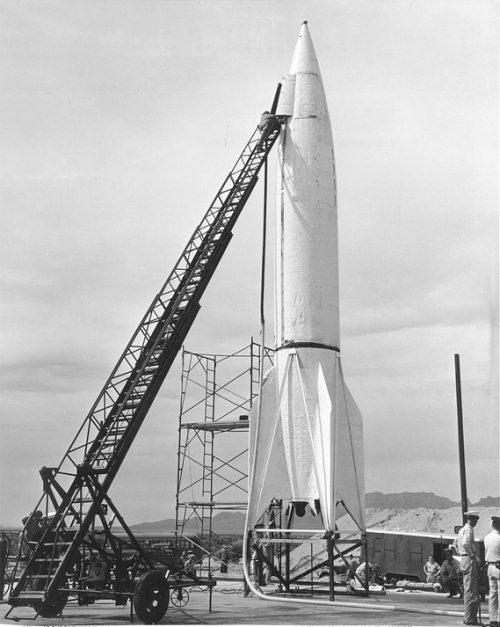
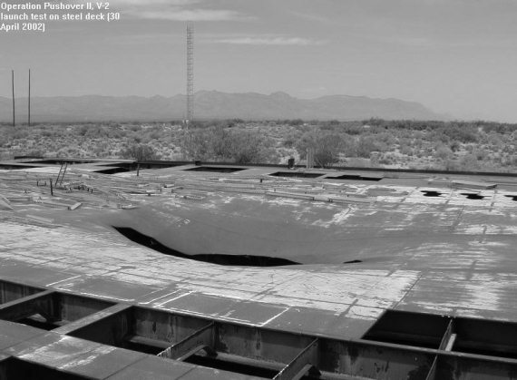

Операции «Сэнди» и «Пушовер»
Рассказ о приключениях «Фау-2» в Америке будет не полон, если не упомянуть еще два эксперимента, заказчиком которых выступил американский флот. Для конца 1940-х годов это были чрезвычайно важные и интересные работы, и проводились они впервые в мире.
Первый эксперимент под кодовым наименованием «Операция “Сэнди”» предполагал пуск баллистической ракеты с палубы авианосца. Его провели 6 сентября 1947 года в районе Бермудских островов.
Целью пробного пуска являлись:
• проверка возможности заправки ракеты топливом и ее пуск с палубы военного судна;
• проверка возможности продолжения движения судна во время пуска ракеты;
• проверка способности боевого корабля выполнять другие задачи сразу после пуска ракеты, а если нет, то определение времени, необходимого на восстановление нормального функционирования корабля.
Подготовка к операции была начата летом 1947 года. В качестве стартовой площадки был выбран авианосец CV-41 «Мидуэй», строительство которого завершилось двумя годами ранее. Это был один из самых совершенных на тот момент кораблей американского флота. Его заложили еще в годы войны, но в строй он вступил уже после ее окончания. Авианосец «Мидуэй» рассматривался как один из «первоочередников» на оснащение ракетным оружием, поэтому выбор его в качестве испытательной площадки был закономерен.
Хотя в рамках «Операции “Сэнди”» предполагалось запустить всего одну ракету, на борт авианосца из хранилища на полигоне Уайт Сэндз были доставлены три экземпляра. Один предназначался для тренировки боевых расчетов, второй – для эксперимента, третий был резервным. Последняя ракета сохранилась до сих пор. Ее демонстрируют всем гостям, посещающим полигон Уайт Сэндз.

Подготовка ракеты «Фау-2» к операции «Пушовер»
За день до намеченной даты старта на «Мидуэй» прибыла группа немецких специалистов во главе с Вернером фон Брауном. Однако они играли роль наблюдателей, а все подготовительные операции и сам пуск должны были провести специалисты ВМС США. Естественно, что за работами внимательно наблюдали флотские начальники, а также конгрессмены, которые должны были решать вопросы дальнейшего финансирования работ.
Утром 6 сентября 1947 года на борту авианосца царило оживление. Кроме непосредственных участников «Операции “Сэнди”» и многочисленных гостей, на палубу высыпали все свободные от вахты матросы и офицеры, чтобы полюбоваться на невиданное доселе зрелище. И вот, наконец, наступает время старта. Дается зажигание, включаются двигатели, ракета отрывается от палубы «Мидуэя».
На высоте всего трех метров от палубы ракета накренилась влево и пошла не вертикально вверх, а под углом к горизонту. На высоте 10–15 метров она стабилизировала свой полет, начала набирать высоту, но вскоре автоматика отключает двигатели. По инерции ракета еще стремилась ввысь, но всем присутствующим уже было ясно, что пуск аварийный. Спустя минуту после старта ракета упала в воду в 10 километрах от борта авианосца.
Несмотря на то, что пуск был явно аварийным, он позволил ответить на все вопросы, которые стояли перед экспериментаторами.
Во-первых, была доказана возможность старта баллистических ракет с борта военных кораблей.
Во-вторых, было установлено, что корабль, с которого стартует ракета, может продолжать выполнять свою боевую задачу.
Правда, не удалось выяснить, что будет с судном, если ракета взорвется на его палубе. Но такая задача в тот раз и не ставилась.
Ответ на этот вопрос был получен в ходе второго эксперимента, который провели весной 1948 года под кодовым наименованием «Операция “Пушовер”». В ходе этого комплекса испытаний предстояло ответить на следующие вопросы:
1. Какими будут характер и степень повреждений, получаемых судном, если ракета взорвется при подготовке к пуску или в момент старта?
2. Какие повреждения будут нанесены в случае, если корабль будет поражен ракетой?
Вполне естественно, что проводить эксперимент в реальных условиях, то есть в море, на борту боевого корабля, никто не решился. Местом проведения испытаний была выбрана 36-я площадка полигона Уайт Сэндз, где изготовили макет в натуральную величину, имитирующий палубу авианосца.
Тем самым исследователи убивали двух зайцев.
Во-первых, они сохраняли в составе американского флота все боевые корабли, не израсходовав ни один из них на свой губительный эксперимент.
А во-вторых, они имели возможность детально и без спешки изучить все последствия взрыва, не опасаясь, что судно пойдет ко дну.
Дальнейшие события продемонстрировали дальновидность тех, кто все это планировал.
«Операция “Пушовер”» состоялась весной 1948 года. К сожалению, точную дату ее проведения установить не удалось. Во всех источниках упоминается лишь то, что эксперимент состоялся, но отсутствуют какие-либо детали, позволяющие рассказать о нем подробнее.
Известно, что были использованы две ракеты. Их устанавливали на макете, заправляли, после чего приводился в действие тротиловый заряд. Дальше все происходило так, как положено для данной ситуации: взрыв топлива в баках, оглушительный грохот, море огня, охватывавшее палубу сухопутного корабля. На достаточном удалении от места проведения эксперимента располагалась группа специалистов, терпеливо ожидавших, когда закончится пожар и можно будет приступить к изучению последствий взрыва.
Результаты испытаний поразили военных: стальная палуба треснула, огненный вал фактически смел с нее все постройки. Характер повреждений говорил о том, что крупное судно, вероятнее всего, сохранило бы плавучесть, но не смогло бы активно участвовать в боевых действиях. А вот кораблю малых размеров в этой ситуации не поздоровилось бы – он был бы уничтожен.

Результаты операции «Пушовер» (наши дни)
Как полагают, результаты «Операции “Пушовер”» стали одной из причин, по которым американский флот в дальнейшем выбрал путь создания твердотопливных ракет для своих нужд. Они не так прихотливы при хранении, их проще готовить к запуску. Хотя, если говорить о последствиях взрыва, то особой разницы нет, какая ракета взорвется на борту судна, жидкостная или твердотопливная. Последствия будут одинаковыми.
И еще несколько слов о том давнем эксперименте. Его следы сохранились до сегодняшнего дня. Если кто-нибудь из читателей окажется в США и сможет побывать на полигоне Уайт Сэндз (это довольно реально, так как там действует выставочный комплекс), он увидит на 36-й площадке полуразрушенный макет авианосца с треснувшей палубой. Стальные листы слегка тронуты коррозией, но все остальное выглядит точно так же, как и пятьдесят шесть лет назад.
На этом история «Фау-2» в Америке закончилась. Но «немецкий след» еще не раз можно будет обнаружить на страницах этой книги. Я не буду специально акцентировать внимание читателей на этом вопросе. Вы и так поймете, кто есть кто, и кто что сделал для американской космонавтики. Поэтому давайте перейдем к следующей главе и поговорим о «Викингах», «Аэроби» и некоторых других ракетах, которые были созданы в первые послевоенные годы. Они идут параллельно с испытаниями «Фау-2». Хотя это уже совсем другая история.